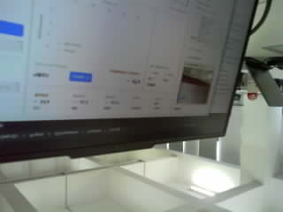

AIX 主动视觉安全监控台
主动视觉闭环监控
● 闭环运行正常
头盔设备 01 · 正常
视觉模型 · 显卡加速 · 已就绪
低风险
需要注意
高风险
严重风险
模型加载
结果失效
运行总览
诊断信息
系统设置
01
●
相机采集
320×240 · 4.95 帧/秒
02
●
图像上传
2.42 帧/秒 · 第 1712 帧
03
●
上位机视觉推理
已就绪 · 173 毫秒
04
●
动作反馈
已确认 · 第 1712 帧
实时视觉画面
● 画面实时更新
第 00001712 帧 · 采集时间 23022 毫秒

图像来源 · 头盔相机
采集状态 · 4.95 帧/秒 · 失败 0 次
传输状态 · 2.42 帧/秒 · 第 1712 帧
上传帧率
2.42 帧/秒
帧时效
96 毫秒
推理耗时
173 毫秒
回传耗时
224 毫秒
动作确认帧
第 1712 帧
最后错误
无
诊断信息
收起诊断
链路
第 1712 帧：上传正常
模型已就绪
回传已确认
动作反馈正常
协议
风险结果版本 1
动作确认版本 1
令牌校验通过
帧序校验通过
设备
相机采集正常
压力传感器未接入
运动模块未接入
板载指示灯已接入
会话
图像与风险记录已开启
帧号去重已开启
模型日志记录正常
会话状态正常